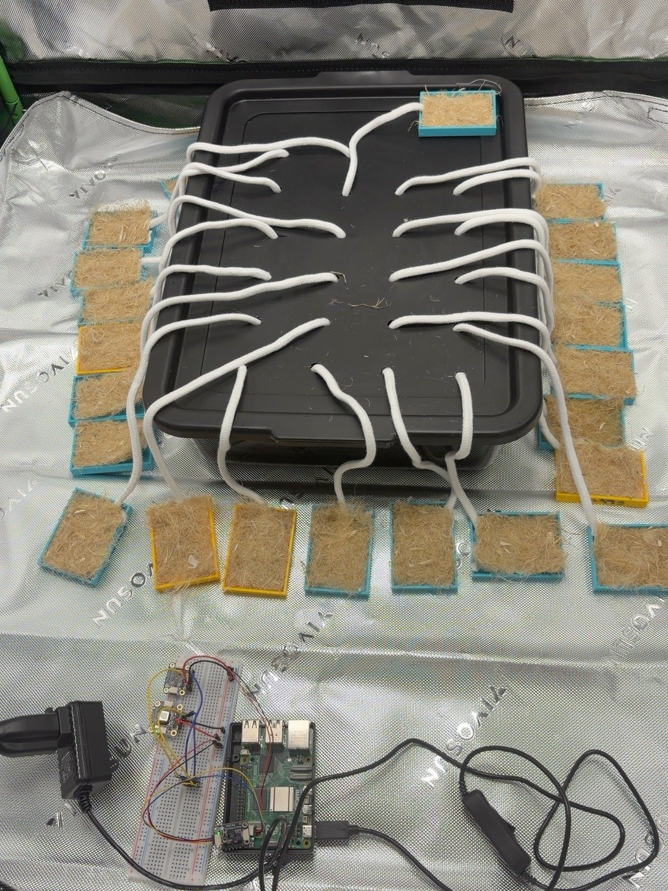
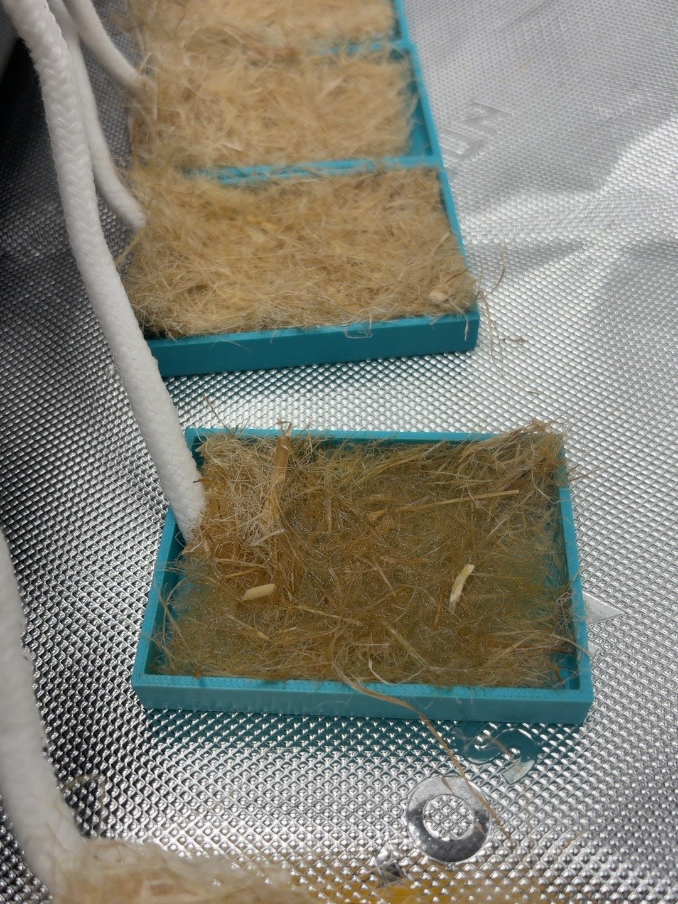
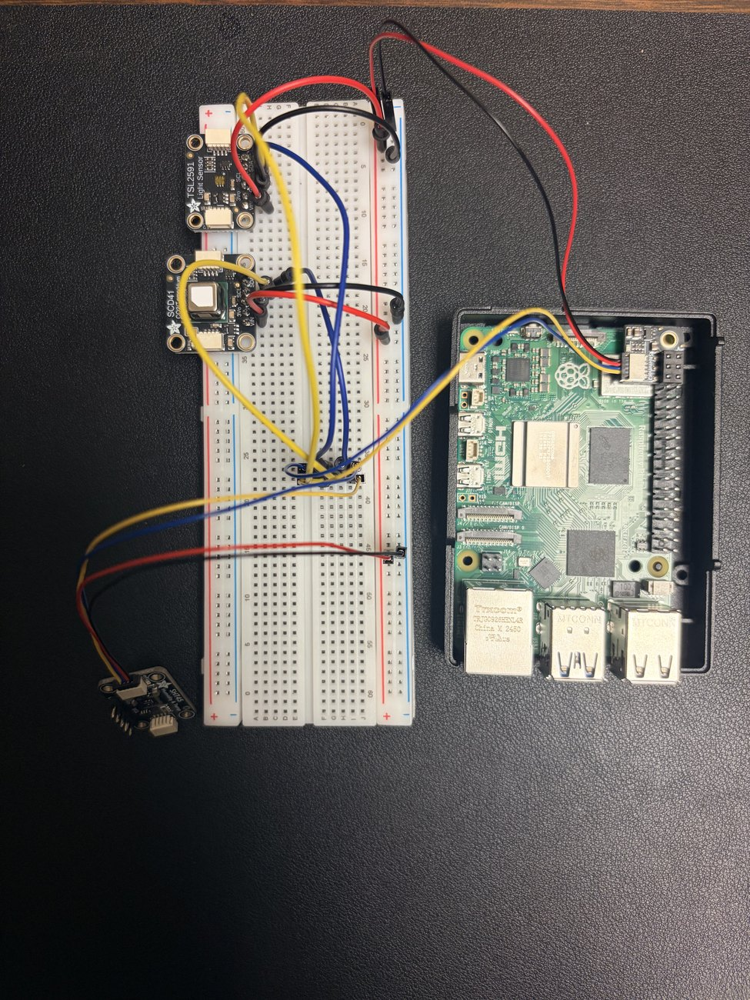
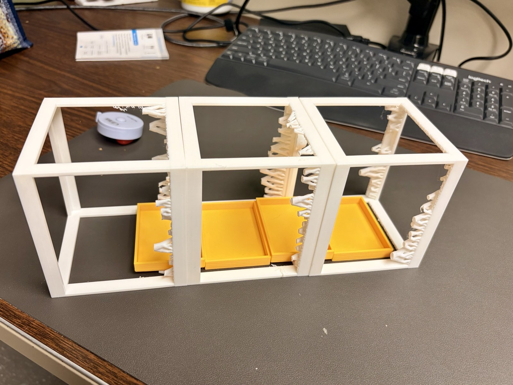
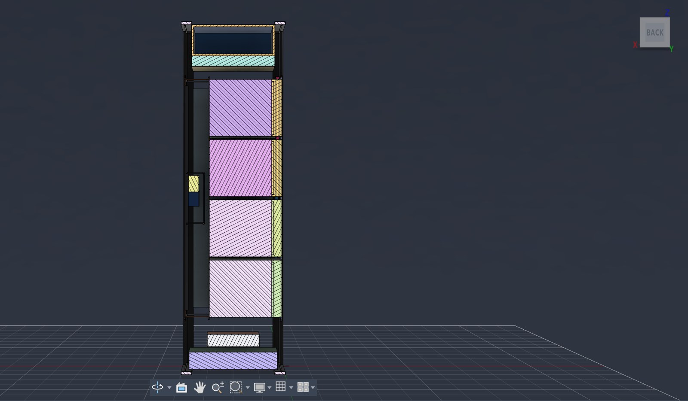

Space agriculture at UH Mānoa
Can a camera tell when a plant needs water?
We’re building a plant experiment for the International Space Station. For now, we’re working in a grow tent in Hawaiʻi. Before we plant anything, we need to know whether water can reach every tray.
University of Hawaiʻi at Mānoa
Supported through NASA EPSCoR ISS

The experiment
What happens before a leaf wilts?
A leaf can still look green as it begins to run short of water. When its pores close, less water evaporates from its surface. The leaf can warm up. We want to see whether a thermal camera can pick up that change while the plant still looks healthy in a regular photo.
In the ground trials, we plan to vary the water supply and record which wavelengths of light the leaves reflect. We’ll check the model’s predictions against water content measured by weight. A handheld meter will give us a chlorophyll reading just after imaging.


Grow tent / October 27 and 28, 2026
The wicks got wet. Most trays barely changed in weight.
We put dry wicks into a shared reservoir and ran one to each of 22 hemp mats. We left the trays unplanted so we could see where the water went.
After nearly 23 hours, we weighed each tray with its mat. Tray 6 gained 12.82 g. Seventeen of the 22 tray and mat pairs finished within 0.10 g of their starting weight. A wet wick alone told us very little about the mat at the other end.
What we’ll change in the next test
We’ll wet the mats and wicks before we start. We’ll keep the reservoir at a set height and record where each wick touches its mat. Weighing the wicks separately will tell us how much water they hold when we take the setup apart.
Inside the tent
What the Pi recorded
A Raspberry Pi 5 took a reading every minute. It logged air temperature and humidity alongside CO₂ and light. The file contains 1,489 consecutive readings over 24 hours and 48 minutes.
Air temperature at the sensor ranged from 25.59 to 32.77 °C. The light readings showed when the tent got brighter or darker. We still need to check those changes against the lamp timer.

Payload design
Fitting a camera beside the plants
The proposed chamber is about 10 cm wide and 34 cm long. Four growing trays sit along one wall in the current layout. We’re checking how much room the leaves will have and whether a camera can see them as they grow.




The ISS experiment
Would the same warm leaf mean the same thing in orbit?
A model trained in our grow tent might learn that a warmer leaf is short of water. On the ISS, water moves differently around the roots. We want to find out whether the model would still read the leaf correctly.
The flight plan calls for running the model on board and saving the images with the conditions in the chamber. Researchers could then go back to a particular reading and check what the plant looked like when the model flagged it.
“Determine the reliability of Earth-trained machine learning classifiers when applied in space”
University of Hawaiʻi at Mānoa
Meet the team
- Dr. Daniel Drew
- Teaches electrical and computer engineering and studies small robots.
- Dr. Kent Kobayashi
- Studies how to grow crops in controlled environments, including hydroponic systems for space research.
- Kristen Chang
- Mechanical engineering student.
- Landen Ildefonso
- Electrical engineering student.
- Shelby Dixon
- Computer engineering student.
- Jason Yee
- Mechanical engineering student.
- Dr. Xing Wei
- Uses images of plants to study signs of disease.